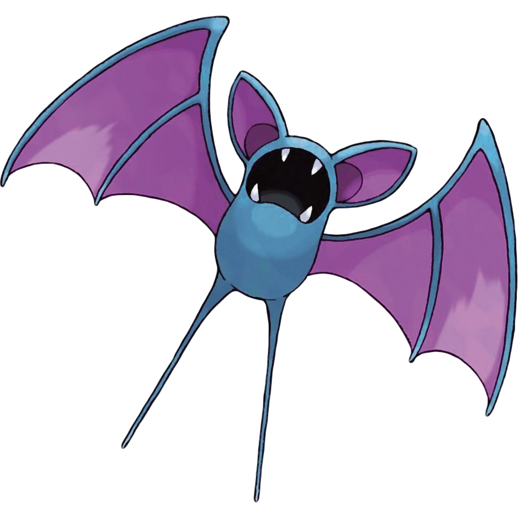
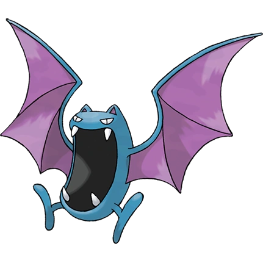

KANTO POKÉDEX
← 포켓몬 목록으로
#041

주뱃
독
비행
박쥐 포켓몬
특성
정신력
틈새포착 (숨겨진 특성)
울음소리
포획률 & 성비
포획률
255 / 255
성비
♂ 50%
50% ♀
생태
낮에 어두운 곳에서 가만히 있는 것은 긴 시간 동안 햇빛을 받으면 전신에 가벼운 화상을 입기 때문이다. 골뱃으로 진화한다.
진화
주뱃
→
골뱃

← #040 푸크린
#042 골뱃 →